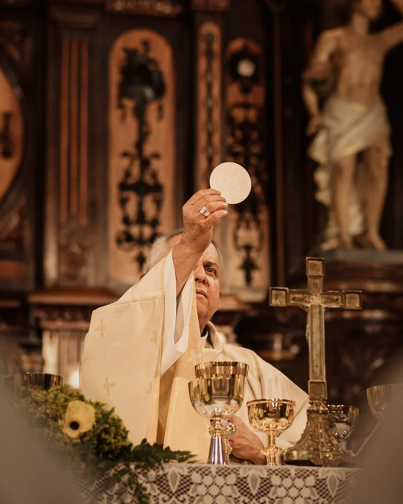

SACRAMENT OF INITIATION
The Body
and Blood of Christ
It is also known as the Lord’s Supper or the Holy Communion, as it is the sacrament that Jesus introduced during his Last Supper. Additionally, it involves the bread and wine wherein it becomes the real or symbolic Body and Blood of Christ. It is consumed as a way of remembering the sacrifices Jesus endured.
The Eucharist reminds us of Jesus' sacrifice and strengthens our relationship with Him. It nourishes our faith and unites us as one community in God's love.

Christ is truly present in the Eucharist.
UNDERSTANDING THE EUCHARIST
What happens in the Eucharist?
Strengthens
The Eucharist serves as the foundational act of Christian worship. It continuously brings Christ’s sacrifice into the present which strengthens one’s faith and trust to God. By regularly recieving it, one can actively commit to their faith and connection to one another.
Deepens
In the Holy Eucharist, one deepens the relationship with Jesus while providing the guidance to ignore temptations in their life. It cleans one from minor sins, inspires charity, and strengthens resilience to get past daily challenges.
Guides
The Eucharist serves as the guide for one to follow Jesus’ teachings and implement it in their daily routine. After recieving this sacrament, one can be called to serve others, show compassion, and promote peace in their community.
Signs and Symbols of the Eucharist.
The Eucharist uses important signs and symbols that help us understand its sacred meaning.
Bread — Represents the Body of Christ.
Wine - Represents the Blood of Christ.
WHY IT MATTERS
The Eucharist and the Christian Life
The Eucharist is important because it brings us closer to Jesus and strengthens our relationship with God. Through Holy Communion, we receive spiritual nourishment and are reminded of Christ's great love and sacrifice.
The Eucharist also calls us to live out Jesus' teachings by serving others, showing compassion, forgiving one another, and promoting peace and love in our community.
LEARN MORE
The Holy Eucharist
Learn more about the Sacrament of the Holy Eucharist.